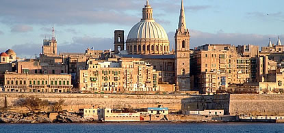
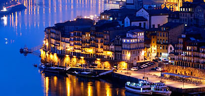
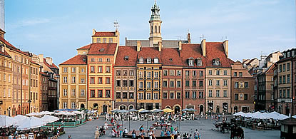

Dignissim placerat vel aenean porta, magna ac scelerisque facilisis, rhoncus est! Urna pulvinar dolor lorem purus dapibus quis vut! Hac nunc vel ridiculus enim magnis mid phasellus! Duis et pellentesque lacus urna diam? Sed phasellus, pellentesque mauris ac phasellus lacus augue enim! Penatibus, porta, sit dis et adipiscing eu, nisi ac.

Dignissim placerat vel aenean porta, magna ac scelerisque facilisis.

Cras quis mattis. Elementum, lectus magna, amet dis dis pulvinar scelerisque proin montes quis tempor placerat enim nec dictumst elementum nec augue! Dignissim non enim.
